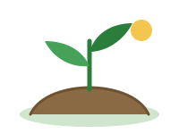

My checks
Every photo you have checked, newest first.

No checks yet
Photograph a leaf and your result will be saved here.
Check your first plantNothing matches this filter
Try a different result type.
Every photo you have checked, newest first.

Photograph a leaf and your result will be saved here.
Check your first plantTry a different result type.